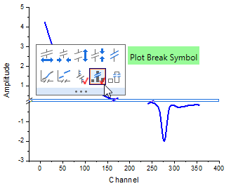
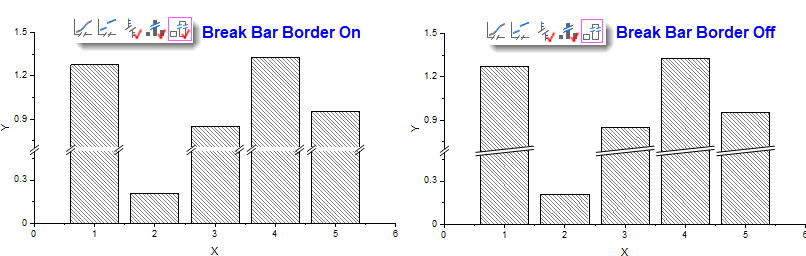

FAQ-1061 Wie füge ich im Diagramm eine Unterbrechungsmarkierung beim Bereich der Unterbrechung hinzu?
Add-Axis-Break-on-Plot
Letztes Update: 03.08.2020
Wenn eine Unterbrechung in eine Achse eingefügt wurde, wird der Bereich der Unterbrechung standardmäßig als eine Lücke im Diagramm angezeigt.
Markierung der Achsenunterbrechung zeichnen
- Klicken Sie nach Hinzufügen der Unterbrechung auf sie und wählen Sie die Schaltfläche Symbol der Achsenunterbrechung auf der angezeigten Minisymbolleiste.
- 
Hinweis: Das Symbol der Unterbrechungsmarkierung entspricht der Form der Achsenunterbrechung und seine Farbe die der Zeichnung.
Insbesondere für Säulen-/Balkendiagramm
- Sie können weiterhin die Schaltfläche Rahmen des Unterbrechungsbalkens (neben der Schaltfläche Symbol der Achsenunterbrechung) wählen, um die Markierung der Unterbrechung an beiden Rändern zu zeichnen. Anderenfalls wird die Markierung über den gesamten Balken gezeichnet.
- 
Schlüsselwörter:Achsenunterbrechung, Abstand, Lücke, Markierung der Unterbrechung, Bereich der Unterbrechung, Unterbrechungsbereich